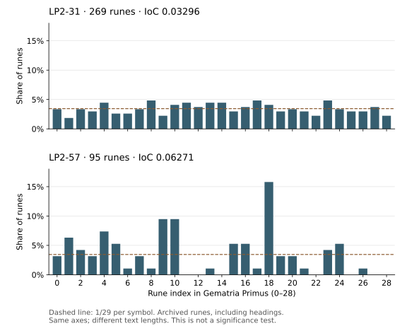

Index of coincidence: a reproducible rune baseline
Matching-pair counts for every archived page, exact inputs, scaling, invariants and interpretation limits.
On this page
The index of coincidence (IoC) measures how often two different positions in a text contain the same symbol. It summarizes the symbol distribution; it does not read the text or identify a cipher by itself. The page measurements below count archived Liber Primus runes, including headings.
Count matching pairs
Before using this number to compare candidate decodings, read what cipher operations preserve. A rearrangement or fixed reversible alphabet substitution cannot change whole-stream IoC.
Let N be the number of runes and nᵢ the count of rune i. The unscaled convention used here is:
IoC = sum(nᵢ × (nᵢ − 1)) / (N × (N − 1))There are N × (N − 1) ordered choices of two distinct positions. A rune occurring nᵢ times contributes nᵢ × (nᵢ − 1) matching choices. Dividing gives the probability of a match when sampling positions without replacement. Counting unordered pairs instead divides both quantities by two and produces the same result.
For the three-symbol sequence F F U, only the two F positions match. The numerator is 2 and the denominator is 6, so IoC is 1/3. For F U it is 0; for F F it is 1. With zero or one symbol there is no pair to draw, so IoC is undefined. The JSON uses null in that case.
Reordering F F U as U F F leaves the two F symbols and the IoC unchanged. Replacing every F with one new symbol and every U with another also leaves the count unchanged. IoC can help compare frequency concentration, but it cannot tell which arrangement was read or which fixed one-to-one alphabet mapping was used.
Examples from the archived streams
These are rounded display values. Use the integer numerator and denominator in the report for exact comparisons. The examples illustrate different input lengths and values; they are not a selection of statistically significant pages.
LP2-57's value is higher than LP2-31's because its measured rune counts produce a larger fraction of matching pairs. That is the direct observation. It does not mean LP2-57 is “more English,” easier to solve, or encrypted by a particular method. The pages also have different lengths, so comparing how unusual either value is needs a declared reference process at each length.
Why the two positions must be different
Label the positions in F F U as 0, 1 and 2. Without replacement, the six ordered pairs are (0,1), (0,2), (1,0), (1,2), (2,0), (2,1). Only (0,1) and (1,0) match, giving 2/6 = 1/3.
If the second position can equal the first, three more pairs appear: (0,0), (1,1), (2,2). All three necessarily match. The result becomes 5/9, not 1/3. The text has not changed; the sampling rule has.
| Pair rule for F F U | Matching pairs | All pairs | Match probability |
|---|---|---|---|
| Distinct positions | 2 | 6 | 1/3: this guide’s IoC |
| Same position allowed | 5 | 9 | 5/9: a different measurement |
Let Q = sum((nᵢ/N)²) be the empirical match probability with replacement. There are N self-pairs, so removing them gives IoC = (N × Q − 1)/(N − 1) when N is at least 2. This relation explains the correction; it does not estimate a cipher’s key length.
Enumerate the pairs yourself
from fractions import Fraction
symbols = "FFU"
pairs = [(i, j) for i in range(len(symbols)) for j in range(len(symbols))]
distinct = [(i, j) for i, j in pairs if i != j]
def match_fraction(positions):
matches = sum(symbols[i] == symbols[j] for i, j in positions)
return Fraction(matches, len(positions))
assert match_fraction(distinct) == Fraction(1, 3)
assert match_fraction(pairs) == Fraction(5, 9)
print("Distinct positions:", match_fraction(distinct))
print("Same position allowed:", match_fraction(pairs))This tiny enumeration is for checking the definition. The production script uses frequency counts instead of constructing every pair, which avoids a quadratic list as page length grows. Both methods should agree when they use the same pair rule.
Exactly what this baseline counts
Keep the alphabet multiplier fixed when comparing normalized values. In the O/A/AE sensitivity check, merging three rune types gives IoC × 29 = 1.22; multiplying the same raw value by the 27 remaining types gives 1.14. The difference is a change of scale, not a second result.
- Each page is measured separately using its archived
text/lp…txtfile. - Only the 29 symbols in the published rune alphabet count. A rune with a multi-letter Latin label is still one symbol.
- All archived runes count, including rune headings. Punctuation, whitespace, line-wrap markers, Latin text and printed decimal numbers do not.
- No transcription corrections, decryption, heading removal or page concatenation are applied. This is an archived-stream baseline, not a plaintext baseline.
- A page with no archived rune transcription and a recorded count of zero has an undefined IoC. This does not imply that its image or embedded payload has no information.
Every record contains the input path and SHA-256, the rune count, a 29-entry frequency array, the numerator, denominator and IoC. The array follows the alphabet order stored in the same report. Its alphabet hash covers the UTF-8 concatenation of those 29 runes without separators. Unknown symbols in the Unicode Runic block cause an error rather than being silently discarded.
Reproduce the results
python scripts/rune_ioc.py lp2-31
python scripts/rune_ioc.py --check
python scripts/rune_ioc.py --output my-rune-ioc.json
python scripts/test_rune_ioc.pyRun from the repository or the extracted reference-data ZIP with Python 3; no extra packages are required. See script setup. The first command prints a single-page report. The second recomputes all 75 records and compares them with the published baseline. The third writes a complete report and refuses to overwrite an existing file. The fourth checks short controls, invariants and an independent enumeration of matching pairs.
Download the calculation script · Download all page results and input hashes. The reference-data ZIP includes the script and its inputs; downloading the script alone does not include the manuscript transcriptions.
Compare pages in a spreadsheet
Download the whole-page CSV for one row per manuscript page. It includes the input filename and SHA-256, alphabet hash, rune count, exact matching-pair numerator and denominator, ordinary and scaled IoC, and all 29 rune frequencies. The counting scope is repeated in each row so a filtered extract retains that context.
Columns count_0 through count_28 follow the rune alphabet’s zero-based indices. Blank IoC cells mean undefined, not zero: the title pages do not have enough archived runes for a pair calculation. Import the comma-delimited file with its header row, keep the hash columns as text, and sort entire rows rather than one column alone.
python scripts/rune_ioc.py --format csv --output my-ioc.csvThis recomputes the CSV from the archived transcriptions and refuses to overwrite an existing output. Add an exact page ID to export just that page. The downloadable CSV is a rendering of the published JSON baseline; the command above recalculates it from inputs. Sorting by IoC can help inspect the data, but a high or low rank is not a cipher classification or a probability that a page is unusual.
See the distributions behind the numbers

LP2-31’s counts range from 5 to 13 per rune. LP2-57 has seven runes with no occurrences and one rune, index 18, with 15 occurrences. Concentration matters because a count contributes nᵢ(nᵢ − 1) matching pairs: a count of 15 supplies 210, while a count of 5 supplies only 20. Large counts therefore contribute disproportionately to IoC.
The dashed line is the equal-probability reference, 1/29 per rune. It is not a confidence bound or a minimum. A bar above it simply means that this rune occurs more often than the uniform proportion in this sample. The two pages have different lengths, and the chart does not estimate how surprising either distribution is.
To redraw the figure, extract the reference-data ZIP, install Matplotlib with python -m pip install matplotlib, then run:
python scripts/rune_ioc.py --check
python scripts/plot_rune_frequencies.py --output my-rune-frequencies.svgThe first command checks the saved counts against the archived inputs. The second reads those saved counts and renders the chart, refusing to overwrite an existing output. Matplotlib is needed only to redraw the figure; the numerical IoC checks use Python’s standard library. The plotting script fixes the axes and page selection so the two panels remain comparable.
What is the reference level?
For independent, uniformly distributed symbols from a 29-symbol alphabet, the expected match probability is 1/29 ≈ 0.03448276. This follows by adding the 29 possible matching outcomes, each with probability (1/29)². A finite sample need not equal this expectation. An observed value below it is possible; LP2-31 is one example.
The report also supplies scaled_ioc_29 = 29 × IoC, whose uniform independent expectation is 1. Always state whether a number is scaled. Do not compare this rune statistic directly with an English A–Z benchmark: the alphabet, multi-letter symbols, encoding and inclusion rules differ.
Why the uniform reference is not a minimum
Consider the two-symbol sequence F U. Each symbol occurs equally often, yet its IoC is zero: drawing two distinct positions must give different symbols. By contrast, two independent draws from a source that chooses F or U with equal probability match with probability 1/2. Equal counts in a fixed sample and equal probabilities in a generating process are different conditions.
For a fixed length N and an alphabet of K symbols, the lowest possible IoC comes from spreading the counts as evenly as the integer length permits. Write N = Kq + r, where q is the quotient and r the remainder. Then r symbols occur q + 1 times and the other K − r occur q times. Some counts may be zero when the text is shorter than the alphabet.
Minimum matching ordered pairs =
r × q × (q + 1) + (K − r) × q × (q − 1)
Minimum IoC = minimum matching pairs / (N × (N − 1))Why does balancing minimize the count? If one symbol occurs at least twice more often than another, moving one occurrence from the larger count to the smaller reduces the sum of matching pairs. Repeating that step ends when no two counts differ by more than one. This proves a bound over possible count distributions; it does not say that any particular cipher should produce the minimizing distribution.
Compare the three values for LP2-31
LP2-31 has 269 archived runes. Dividing by 29 gives a quotient of 9 and remainder of 8, so the most balanced distribution has eight counts of 10 and twenty-one counts of 9.
| Comparison | Unscaled IoC | Meaning |
|---|---|---|
| Finite-sample minimum | 2232 / 72092 ≈ 0.03096044 | Lowest possible value for 269 positions and 29 available symbols. |
| Observed LP2-31 | 2376 / 72092 ≈ 0.03295789 | Calculated from the archived rune counts. |
| Uniform independent expectation | 1 / 29 ≈ 0.03448276 | Average match probability under independent, equally probable symbols. |
The observed value lies between the minimum and the independent expectation. That placement alone is not a significance test: it supplies neither a tail probability nor a measure of how often such a value occurs under a specified model. In particular, being below 1/29 is not evidence by itself of a deliberate balancing procedure.
Reproduce the comparison
import json
from fractions import Fraction
from pathlib import Path
report = json.loads(Path("data/evidence/rune-ioc.json").read_text(encoding="utf-8"))
page = next(p for p in report["records"] if p["page"] == "lp2-31")
n, k = page["n"], len(page["counts"])
q, r = divmod(n, k)
minimum_pairs = r * q * (q + 1) + (k - r) * q * (q - 1)
minimum = Fraction(minimum_pairs, n * (n - 1))
observed = Fraction(page["numerator"], page["denominator"])
expected = Fraction(1, k)
assert (n, k, minimum_pairs) == (269, 29, 2232)
assert minimum < observed < expected
for name, value in (("minimum", minimum), ("observed", observed),
("independent expectation", expected)):
print(name, value, f"{float(value):.8f}")This example reads the saved baseline. Run python scripts/rune_ioc.py --check first to verify that baseline against the archived inputs. For fewer than two symbols, IoC remains undefined; the formula must not be used with a zero denominator.
What it can and cannot distinguish
Reordering a fixed set of symbols leaves its frequency counts unchanged. A transposition therefore preserves whole-stream IoC. A one-to-one substitution renames symbols but preserves their multiplicities, so it also preserves IoC. This includes Atbash and a constant modular shift. Equality of IoC does not establish which of these transformations, if any, was used.
A changing substitution, such as a repeating-key Vigenère operation, can change the distribution. A value near the uniform reference is nevertheless not proof of Vigenère, randomness or strong encryption. A higher value does not prove plaintext or a monoalphabetic cipher. Different processes can produce similar frequency distributions.
Whole-page measurements can mix regions with different rules. A heading may be unencrypted while the body is encrypted. Joining pages introduces cross-page pairs, so the combined IoC is not generally the simple average of page values. A corrected glyph can change counts. Record these choices before comparing results.
Turning a baseline into an experiment
A periodic analysis would divide positions into columns under a stated period and starting offset, then compare column distributions. That is a separate procedure from the whole-page calculation here. It requires explicit punctuation handling, page boundaries, column lengths and an aggregation rule. Testing many periods and reporting only the largest value creates a selection effect.
Before making a significance claim, specify a null model that matches the actual question. Shuffling the same rune stream cannot test whether its global IoC is unusual, because every shuffle has exactly the same counts. It can be useful for an order-sensitive statistic, such as a specified column analysis, but that experiment needs its own recorded method and results.
This baseline reports descriptive measurements only. It supplies no p-values, cipher classification, key-length estimate or new solution. A technique search belongs in Have we tried it? only when its scope and results are documented through the experiment process.
Periodic and column IoC
The dedicated periodic-IoC guide splits a seven-symbol example into columns and compares an ordinary mean with a pooled pair rate. Whole-page and column measurements use different sets of pairs.
Shuffling a column analysis
Compare two arrangements of the same symbols to see why shuffling can change column IoC while leaving the whole-page value unchanged.
Reproduce the column example
Run the exact-fraction Python example. It uses invented inputs and does not publish an experiment result.
Compare the published LP2-31 tests
The worked manuscript comparison connects the column formula to two completed experiments. The whole-page shuffle baseline and within-row variant both scan periods 2–20 and compare maxima with maxima. Their p-values are 0.214 and 0.246 under different shuffle constraints. These are separate experiment results, not additional outputs of the descriptive whole-page IoC script.
Sources and verification
Historical background: William F. Friedman, The Index of Coincidence and Its Applications in Cryptanalysis, preserved by the NSA. The counting convention and derivation used by this script are stated explicitly above; do not assume every historical or modern use of “IoC” has identical scaling.
Inputs: the archived rune files linked by the baseline manifest and their page records. Checks: short examples, exhaustive pair enumeration for three-symbol-alphabet strings of lengths 2–6, reversal and symbol-renaming invariance, and all 75 recorded page counts. These validate the calculation under its declared inputs; they do not independently validate the photographic transcription.
For another summary of the same frequency counts, see single-rune entropy. Like whole-stream IoC, it cannot rank pure transpositions. The two statistics are not interchangeable: two texts can have the same IoC but different entropy.
For an order-dependent pair count, see rune matches at fixed distances. It compares positions separated by a declared lag, with no circular wraparound.
The all-distance identity shows how the lag counts partition the same matching pairs used by IoC, and why the rates must be weighted by their denominators.
The with-replacement comparison explains why summing squared rune proportions differs from IoC, derives the conversion, and shows a resulting lower bound on Shannon entropy.
Related distribution diagnostics
Frequency analysis begins with the same per-symbol counts used here. Single-rune entropy summarizes their balance using a different formula. Neither whole-stream measurement inspects symbol order. For order-dependent questions, use repeated sequences or periodic IoC with explicit grouping rules. The distribution family groups these diagnostics without treating a measurement as a completed decoding experiment.
Manuscript pages discussed
LP1-00 · LP1-01 · LP1-02 · LP1-03 · LP1-04 · LP1-05 · LP1-06 · LP1-07 · LP1-08 · LP1-09 · LP1-10 · LP1-11 · LP1-12 · LP1-13 · LP1-14 · LP1-15 · LP1-16 · LP2-00 · LP2-01 · LP2-02 · LP2-03 · LP2-04 · LP2-05 · LP2-06 · LP2-07 · LP2-08 · LP2-09 · LP2-10 · LP2-11 · LP2-12 · LP2-13 · LP2-14 · LP2-15 · LP2-16 · LP2-17 · LP2-18 · LP2-19 · LP2-20 · LP2-21 · LP2-22 · LP2-23 · LP2-24 · LP2-25 · LP2-26 · LP2-27 · LP2-28 · LP2-29 · LP2-30 · LP2-31 · LP2-32 · LP2-33 · LP2-34 · LP2-35 · LP2-36 · LP2-37 · LP2-38 · LP2-39 · LP2-40 · LP2-41 · LP2-42 · LP2-43 · LP2-44 · LP2-45 · LP2-46 · LP2-47 · LP2-48 · LP2-49 · LP2-50 · LP2-51 · LP2-52 · LP2-53 · LP2-54 · LP2-55 · LP2-56 · LP2-57
Guides linking here
- Start solving: a practical introduction
- Solving methods: a map of families and variants
- Running the reproduction scripts
- Transliteration and literal readings
- Documenting a reproducible attempt
- Vigenère on the rune alphabet
- Transposition ciphers
- Observations and measurements
- Periodic IoC: columns, weighting, and trial periods
- Rune-frequency entropy: balance without order
- Repeated rune sequences: bigrams and trigrams
- Comparing patterns with chance: null models and selection
- What cipher operations preserve
- Möbius and the crossed-loop drawing
- Wing and Tree: LP2-27–32
- Rubrication: red lettering, numbers, and boundaries
- Rune matches at a distance: lag coincidences
- Night Thoughts: Young, Blake and a proposed book lookup
- Checking and comparing transcriptions
- Fixed alphabet substitutions
- Grid layouts, spirals and route ciphers
- Page and section ordering
- Reported attempts awaiting exact replay